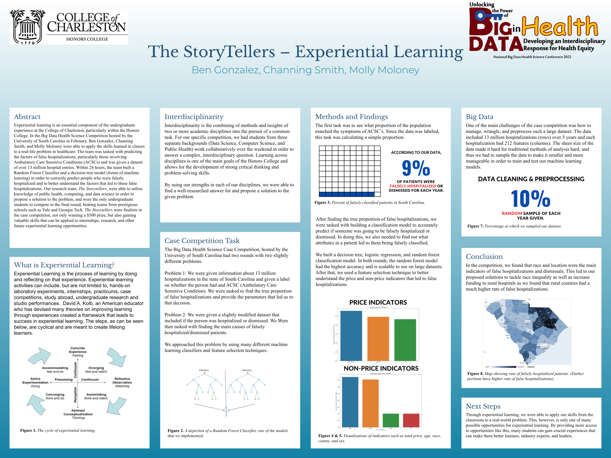

All of the projects listed below can be found on my GitHub by clicking the icon above.
Edge Device Provisioning with RedHat
This project aims to make edge device provisioning and medical analytics simpler and
more accessible for hospitals in regions with limited resources, supporting the global
mission to enhance healthcare services. The open source solution we propose is a
website that a user can go to in order to easily provision an edge device as well as
ChRIS software for the edge device.
Skills: Scrum Master, HTML, CSS, PatternFly Firebase, JavaScript, GitHub, Figma
Ethics Aware Artifical Intelligence Systems
Currently working on a year long research project with Dr. Kris Ghosh. Research funded by NASA, and expected paper in May 2024.
Rapid integration of artificial intelligence in software has created several challenges. One of the challenges for the software is to adhere to the ethical standards for the stakeholders.
The construction of data dependent models in software engineering is to evaluate in novel formalism that is to be evaluated.
Skills: Research, Ethics, NuSMV, Deontic Logic, Model-Checking, Fairness Testing
Volunteer Match-Making Web Application
Throughout this semester, I will be helping to develop a web-based application for volunteers to be matched to organizations in their desired area based on aligned interests.
I am leading this project, and my role will be primarily front-end development, however, I will be assisting with database design as well.
Skills: HTML, CSS, Firebase, JavaScript, GitHub, Software Engineering Documentation
This website!
In order to showcase some of my front-end developing skills, I created this website for others to visit and reach out to me.
If you've made it to this point in my website and are willing to leave me feedback, please do so!
Skills: HTML, CSS, JavaScript
EXPO Posters

Received 'Best in Computer Science' Award - Spring 2023
Read this article for more!

Presented at College of Charleston EXPO Poster Session - Spring 2023

Presented at College of Charleston EXPO Poster Session - Spring 2022
Read this article for more!